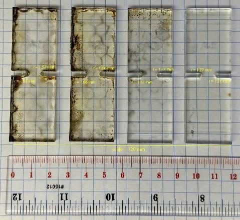
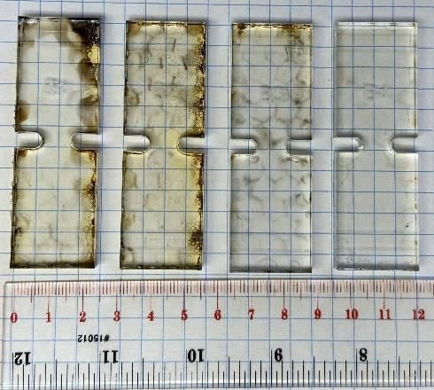
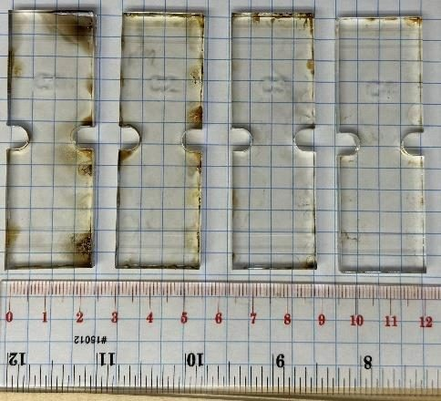
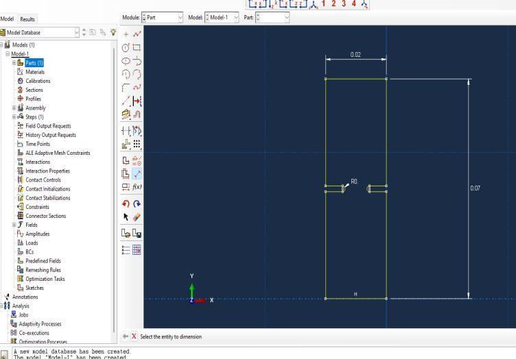
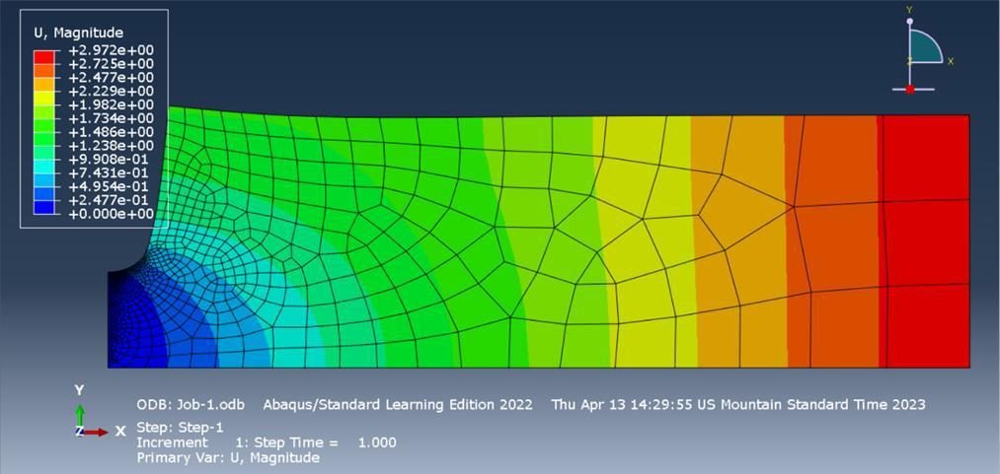
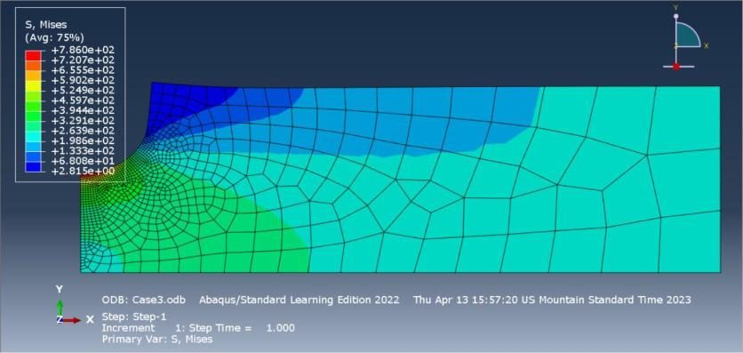
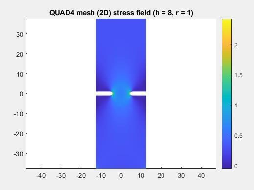
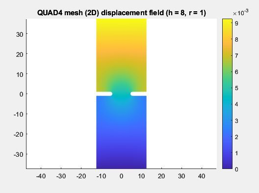
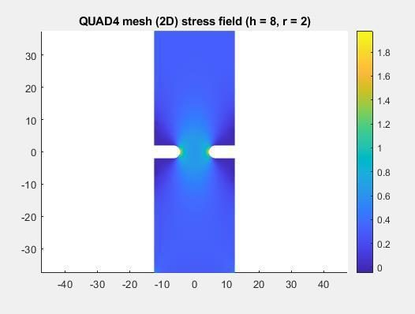
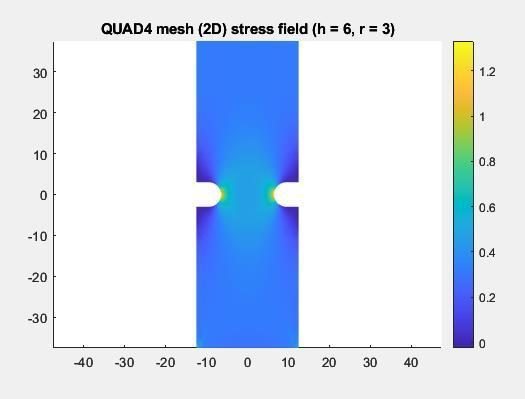

Structures & FEA
Stress Concentration in Plexiglass: FEM vs Roark vs Abaqus
Three notched plexiglass specimens analyzed with three independent methods and compared with measured breaking loads.
- Category
- Structures & FEA
- Tools
- Abaqus · MATLAB FEM · Roark's formulas
- Context
- Arizona State University
- Period
- Jan–May 2023
Overview
Stress concentration factors for three notched geometries (Cases A, B and C) were found with a MATLAB finite element code, Roark's closed-form formulas and Abaqus. I defined the problem and method with a partner, then led the 2D Abaqus mesh, material assignment and simulation setup, wrote the MATLAB FEM code, and interpreted the results.
Setup and method
- Compare stress concentration factors from the FEM code, Roark's formulas and Abaqus.
- Study how mesh resolution changes the predicted stress concentration.
- Evaluate stress and displacement fields in each geometry.
- Use Richardson extrapolation to estimate the convergence rate of the maximum stress and an "exact" stress value.
- Use measured breaking loads to test whether the material fails at the same stress state in all three geometries.
Results
The mesh study and Richardson extrapolation put a convergence rate on the peak stress, and the measured breaking loads were used to predict failure under the different geometric configurations.
Figures










Next project: Tension-Loaded PMMA Plate: Mesh Refinement Study →